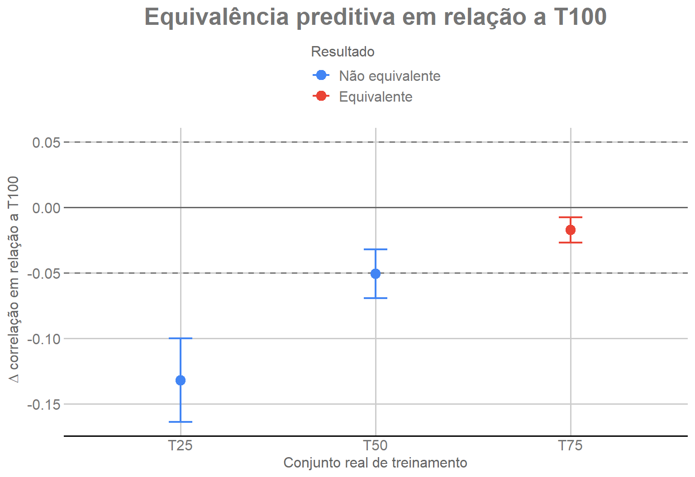

Last updated: 2026-08-11
Checks: 7 0
Knit directory:
genomic-prediction-data-augmentation/
This reproducible R Markdown analysis was created with workflowr (version 1.7.2). The Checks tab describes the reproducibility checks that were applied when the results were created. The Past versions tab lists the development history.
Great! Since the R Markdown file has been committed to the Git repository, you know the exact version of the code that produced these results.
Great job! The global environment was empty. Objects defined in the global environment can affect the analysis in your R Markdown file in unknown ways. For reproduciblity it’s best to always run the code in an empty environment.
The command set.seed(20260810) was run prior to running
the code in the R Markdown file. Setting a seed ensures that any results
that rely on randomness, e.g. subsampling or permutations, are
reproducible.
Great job! Recording the operating system, R version, and package versions is critical for reproducibility.
Nice! There were no cached chunks for this analysis, so you can be confident that you successfully produced the results during this run.
Great job! Using relative paths to the files within your workflowr project makes it easier to run your code on other machines.
Great! You are using Git for version control. Tracking code development and connecting the code version to the results is critical for reproducibility.
The results in this page were generated with repository version 8882e17. See the Past versions tab to see a history of the changes made to the R Markdown and HTML files.
Note that you need to be careful to ensure that all relevant files for
the analysis have been committed to Git prior to generating the results
(you can use wflow_publish or
wflow_git_commit). workflowr only checks the R Markdown
file, but you know if there are other scripts or data files that it
depends on. Below is the status of the Git repository when the results
were generated:
Ignored files:
Ignored: .Rproj.user/
Ignored: ETA_1_varU.dat
Ignored: data/dados_gblup.csv
Ignored: mu.dat
Ignored: output/01_data_objects.rds
Ignored: output/02_splits_mestre_30rep.rds
Ignored: output/03_genomic_objects.rds
Ignored: output/checkpoints/06_da_progress.csv
Ignored: output/figures/
Ignored: varE.dat
Note that any generated files, e.g. HTML, png, CSS, etc., are not included in this status report because it is ok for generated content to have uncommitted changes.
These are the previous versions of the repository in which changes were
made to the R Markdown (analysis/05_equivalence.Rmd) and
HTML (docs/05_equivalence.html) files. If you’ve configured
a remote Git repository (see ?wflow_git_remote), click on
the hyperlinks in the table below to view the files as they were in that
past version.
| File | Version | Author | Date | Message |
|---|---|---|---|---|
| Rmd | a70b225 | Weverton Gomes da Costa | 2026-08-11 | Restore equivalence figure with GDocs style |
| html | d32edc6 | WevertonGomesCosta | 2026-08-11 | Publish workflowr tutorial site |
| Rmd | 1adaff0 | Weverton Gomes da Costa | 2026-08-11 | Rewrite equivalence analysis with visible NB-TOST calculation |
| Rmd | 22baf70 | Weverton Gomes da Costa | 2026-08-10 | Add stage 5 equivalence analysis |
A curva de aprendizado mostrou que T75 apresenta desempenho próximo de T100. Agora precisamos responder uma pergunta mais específica:
A diferença é pequena o suficiente para considerar uma amostra reduzida praticamente equivalente a T100?
Não procuramos provar que as correlações são exatamente iguais. Definimos uma margem de diferença considerada pequena para este estudo:
\[ \delta = 0.05. \]
Neste tutorial, delta = 0.05 é uma margem de
equivalência prática definida especificamente para este estudo (SESOI) e
não um limiar universal para estudos de predição genômica.
Uma estratégia será considerada equivalente quando o intervalo de confiança do efeito estiver totalmente dentro de:
\[ [-0.05,\,+0.05]. \]
Esta etapa utiliza apenas os 120 resultados reais já produzidos na Etapa 4. Nenhum GBLUP é reajustado.
BASELINE_FILE <- "results/04_baseline_results.csv"
if (!file.exists(BASELINE_FILE)) {
stop("Arquivo ausente: results/04_baseline_results.csv")
}
baseline <- read.csv(BASELINE_FILE)
stopifnot(nrow(baseline) == 120)Cada cenário reduzido é comparado com T100 na mesma repetição. Isso é possível porque ambos foram avaliados exatamente nos mesmos 276 indivíduos de validação.
t100 <- baseline[
baseline$proporcao_pool == 1,
c("repeticao", "correlacao")
]
names(t100)[2] <- "correlacao_T100"
reduzidos <- baseline[
baseline$proporcao_pool < 1,
c(
"repeticao",
"proporcao_pool",
"n_treino",
"correlacao"
)
]
diferencas <- merge(
reduzidos,
t100,
by = "repeticao"
)
diferencas$delta_cor <-
diferencas$correlacao -
diferencas$correlacao_T100
aggregate(
delta_cor ~ proporcao_pool,
data = diferencas,
FUN = mean
) |>
knitr::kable(
digits = 4,
caption = "Diferença média de correlação em relação a T100"
)| proporcao_pool | delta_cor |
|---|---|
| 0.25 | -0.1320 |
| 0.50 | -0.0508 |
| 0.75 | -0.0173 |
Valores negativos indicam que a amostra reduzida teve correlação menor que T100.
As 30 repetições não são 30 experimentos completamente independentes. Os holdouts são sorteados da mesma população e um mesmo indivíduo pode aparecer em várias repetições.
Por isso usamos a aproximação de Nadeau-Bengio para aumentar o erro-padrão em relação ao teste pareado ingênuo:
\[ SE_{NB}= \sqrt{ \left( \frac{1}{R}+ \frac{n_{test}}{n_{train}} \right)s_d^2 }. \]
Aqui:
R = 30 repetições;n_test = 276 indivíduos de validação;n_train = 1103 para a análise primária;s_d é o desvio-padrão das diferenças pareadas.O TOST realiza dois testes unilaterais. Para declarar equivalência,
precisamos rejeitar simultaneamente que a diferença seja menor ou igual
a -0.05 e que seja maior ou igual a +0.05.
O código abaixo mostra a conta diretamente, sem função auxiliar.
DELTA <- 0.05
ALPHA <- 0.05
R <- 30
N_TEST <- 276
N_TRAIN <- 1103
resultado_equivalencia <- data.frame()
for (proporcao in c(0.25, 0.50, 0.75)) {
d <- diferencas$delta_cor[
diferencas$proporcao_pool == proporcao
]
media_d <- mean(d)
sd_d <- sd(d)
fator_NB <-
1 / R +
N_TEST / N_TRAIN
se_NB <- sqrt(
fator_NB * sd_d^2
)
gl <- length(d) - 1
p_inferior <- 1 - pt(
(media_d + DELTA) / se_NB,
df = gl
)
p_superior <- pt(
(media_d - DELTA) / se_NB,
df = gl
)
t_critico <- qt(
1 - ALPHA,
df = gl
)
ic90_inf <- media_d - t_critico * se_NB
ic90_sup <- media_d + t_critico * se_NB
p_TOST <- max(
p_inferior,
p_superior
)
equivalente <-
p_inferior < ALPHA &&
p_superior < ALPHA &&
ic90_inf > -DELTA &&
ic90_sup < DELTA
resultado_equivalencia <- rbind(
resultado_equivalencia,
data.frame(
Proporcao = proporcao,
N_real = unique(
diferencas$n_treino[
diferencas$proporcao_pool == proporcao
]
),
Delta_cor_media = media_d,
SE_NB = se_NB,
IC90_inf = ic90_inf,
IC90_sup = ic90_sup,
p_TOST = p_TOST,
Equivalente = equivalente
)
)
}
knitr::kable(
resultado_equivalencia,
digits = 4,
caption = "Equivalência das amostras reais reduzidas com T100"
)| Proporcao | N_real | Delta_cor_media | SE_NB | IC90_inf | IC90_sup | p_TOST | Equivalente |
|---|---|---|---|---|---|---|---|
| 0.25 | 275 | -0.1320 | 0.0188 | -0.1639 | -0.1001 | 0.9999 | FALSE |
| 0.50 | 551 | -0.0508 | 0.0109 | -0.0694 | -0.0322 | 0.5287 | FALSE |
| 0.75 | 827 | -0.0173 | 0.0056 | -0.0269 | -0.0077 | 0.0000 | TRUE |
O resultado identifica T75 como a menor amostra real cujo intervalo de 90% permanece completamente dentro da margem de equivalência.
A figura mostra a mesma análise da tabela anterior. O ponto representa a diferença média de correlação em relação a T100 e a barra vertical representa o intervalo de confiança de 90% corrigido por Nadeau-Bengio.
As linhas tracejadas em -0.05 e +0.05
delimitam a região de equivalência. Um cenário só é equivalente quando
todo o seu intervalo permanece dentro dessa região.
if (!requireNamespace("ggplot2", quietly = TRUE)) {
stop("Instale o pacote ggplot2 para gerar as figuras do tutorial.")
}
if (!requireNamespace("ggthemes", quietly = TRUE)) {
stop("Instale o pacote ggthemes para usar o padrão gráfico GDocs.")
}
dados_equivalencia <- resultado_equivalencia
dados_equivalencia$Cenario <- factor(
dados_equivalencia$Proporcao,
levels = c(0.25, 0.50, 0.75),
labels = c("T25", "T50", "T75")
)
dados_equivalencia$Status <- factor(
ifelse(
dados_equivalencia$Equivalente,
"Equivalente",
"Não equivalente"
),
levels = c("Não equivalente", "Equivalente")
)
figura_equivalencia <- ggplot2::ggplot(
dados_equivalencia,
ggplot2::aes(
x = Cenario,
y = Delta_cor_media,
color = Status
)
) +
ggplot2::geom_hline(
yintercept = 0,
color = "grey40",
linewidth = 0.6
) +
ggplot2::geom_hline(
yintercept = c(-DELTA, DELTA),
color = "grey45",
linetype = "dashed",
linewidth = 0.7
) +
ggplot2::geom_errorbar(
ggplot2::aes(
ymin = IC90_inf,
ymax = IC90_sup
),
width = 0.12,
linewidth = 0.8
) +
ggplot2::geom_point(
size = 3.5
) +
ggthemes::scale_color_gdocs() +
ggplot2::labs(
title = "Equivalência preditiva em relação a T100",
x = "Conjunto real de treinamento",
y = expression(Delta * " correlação em relação a T100"),
color = "Resultado"
) +
ggthemes::theme_gdocs() +
ggplot2::theme(
plot.title = ggplot2::element_text(
face = "bold",
hjust = 0.5
),
legend.position = "top"
)
figura_equivalencia
Diferença de correlação em relação a T100 e intervalos de confiança de 90% corrigidos por Nadeau-Bengio.
ggplot2::ggsave(
filename = "output/figures/05_equivalencia_vs_T100.png",
plot = figura_equivalencia,
width = 8,
height = 5.5,
dpi = 300
)Visualmente, T25 e T50 permanecem fora da região de equivalência,
enquanto o intervalo de T75 está inteiramente entre -0.05 e
+0.05.
Na análise principal usamos n_train = 1103,
correspondente ao pool externo de treinamento. Como verificação de
sensibilidade, repetimos a correção usando o tamanho efetivo de cada
estratégia: 275, 551 ou 827.
tamanhos_efetivos <- c(
"0.25" = 275,
"0.5" = 551,
"0.75" = 827
)
sensibilidade <- data.frame()
for (proporcao in c(0.25, 0.50, 0.75)) {
d <- diferencas$delta_cor[
diferencas$proporcao_pool == proporcao
]
n_train_efetivo <- unname(
tamanhos_efetivos[
as.character(proporcao)
]
)
media_d <- mean(d)
sd_d <- sd(d)
fator_NB <-
1 / R +
N_TEST / n_train_efetivo
se_NB <- sqrt(
fator_NB * sd_d^2
)
gl <- length(d) - 1
p_inferior <- 1 - pt(
(media_d + DELTA) / se_NB,
df = gl
)
p_superior <- pt(
(media_d - DELTA) / se_NB,
df = gl
)
t_critico <- qt(
1 - ALPHA,
df = gl
)
ic90_inf <- media_d - t_critico * se_NB
ic90_sup <- media_d + t_critico * se_NB
equivalente <-
p_inferior < ALPHA &&
p_superior < ALPHA &&
ic90_inf > -DELTA &&
ic90_sup < DELTA
sensibilidade <- rbind(
sensibilidade,
data.frame(
Proporcao = proporcao,
N_train_correcao = n_train_efetivo,
Delta_cor_media = media_d,
IC90_inf = ic90_inf,
IC90_sup = ic90_sup,
p_TOST = max(p_inferior, p_superior),
Equivalente = equivalente
)
)
}
knitr::kable(
sensibilidade,
digits = 4,
caption = "Sensibilidade da correção ao tamanho efetivo de treinamento"
)| Proporcao | N_train_correcao | Delta_cor_media | IC90_inf | IC90_sup | p_TOST | Equivalente |
|---|---|---|---|---|---|---|
| 0.25 | 275 | -0.1320 | -0.1930 | -0.0710 | 0.9850 | FALSE |
| 0.50 | 551 | -0.0508 | -0.0763 | -0.0253 | 0.5209 | FALSE |
| 0.75 | 827 | -0.0173 | -0.0282 | -0.0064 | 0.0000 | TRUE |
A conclusão não muda: T75 permanece equivalente e T25/T50 não são equivalentes.
Sem Data Augmentation, o menor conjunto real equivalente a T100 é:
\[ \boxed{T75 = 827\text{ indivíduos reais}}. \]
Esse valor será a referência da próxima etapa. O Data Augmentation só terá benefício prático se permitir que T50 ou T25 também se tornem equivalentes a T100.
sessionInfo()R version 4.5.1 (2025-06-13 ucrt)
Platform: x86_64-w64-mingw32/x64
Running under: Windows 11 x64 (build 26200)
Matrix products: default
LAPACK version 3.12.1
locale:
[1] LC_COLLATE=Portuguese_Brazil.utf8 LC_CTYPE=Portuguese_Brazil.utf8
[3] LC_MONETARY=Portuguese_Brazil.utf8 LC_NUMERIC=C
[5] LC_TIME=Portuguese_Brazil.utf8
time zone: America/Sao_Paulo
tzcode source: internal
attached base packages:
[1] stats graphics grDevices utils datasets methods base
loaded via a namespace (and not attached):
[1] gtable_0.3.6 jsonlite_2.0.0 dplyr_1.2.1 compiler_4.5.1
[5] promises_1.5.0 tidyselect_1.2.1 Rcpp_1.1.1 stringr_1.6.0
[9] git2r_0.36.2 dichromat_2.0-0.1 later_1.4.4 jquerylib_0.1.4
[13] textshaping_1.0.4 systemfonts_1.3.1 scales_1.4.0 yaml_2.3.12
[17] fastmap_1.2.0 ggplot2_4.0.3 R6_2.6.1 labeling_0.4.3
[21] generics_0.1.4 workflowr_1.7.2 knitr_1.50 tibble_3.3.1
[25] rprojroot_2.1.1 bslib_0.9.0 pillar_1.11.1 RColorBrewer_1.1-3
[29] ggthemes_5.2.0 rlang_1.1.7 cachem_1.1.0 stringi_1.8.7
[33] httpuv_1.6.16 xfun_0.54 S7_0.2.1 fs_1.6.6
[37] sass_0.4.10 otel_0.2.0 cli_3.6.5 withr_3.0.2
[41] magrittr_2.0.4 digest_0.6.39 grid_4.5.1 rstudioapi_0.17.1
[45] lifecycle_1.0.5 vctrs_0.7.1 evaluate_1.0.5 glue_1.8.0
[49] farver_2.1.2 whisker_0.4.1 ragg_1.5.0 purrr_1.2.1
[53] rmarkdown_2.30 tools_4.5.1 pkgconfig_2.0.3 htmltools_0.5.9